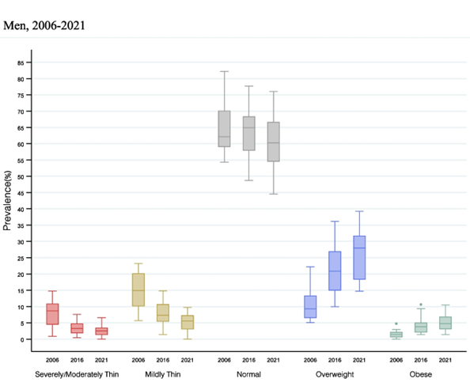

Obesity in Men: Understanding the Prevalence and its Impact on Health
Globally, over 800 million men are classified as obese, with India ranking 180th in obesity prevalence among men. This alarming statistic highlights the widespread impact of obesity across different demographics. It’s not just a matter of appearance – obesity has far-reaching consequences on overall health and well-being. From heart disease and diabetes to certain types of cancer, the health risks associated are profound.
Understanding the prevalence of obesity in men is critical and the need for targeted interventions, lifestyle changes, and public health awareness has never been more urgent.
What is Obesity?
Obesity is more than just a physical condition – it’s a complex, multi-dimensional health challenge that affects millions worldwide.
Defined as an excess accumulation of body fat, it is commonly measured using the Body Mass Index (BMI). The BMI is the calculation derived from an individual’s height and weight, allowing for a standardized assessment of body weight relative to height.
According to the WHO, those having a BMI of 30 or greater, are classified as ‘obese’. While those having a BMI between 25 and 29.9 are classified as ‘overweight’.
Obesity can further be categorized into different classes:
- Class I (Moderate Obese): BMI 30-34.9
- Class II (Severe Obesity): BMI 35-39.9
- Class III (Morbid Obesity): BMI 40 or above
These classifications help healthcare professionals assess the potential health risks associated with an individual’s weight status.
Prevalence of Obesity in Men
The prevalence of obesity in men has risen dramatically over the past few decades.
In 2022, India recorded 26 million obese men out of a total of 70 million obese adults, marking a 5% increase in obesity prevalence among men since 1990. This growing trend spans across various age groups and regions.
(Source: https://indianexpress.com/article/health-wellness/obesity-lancet-study-india-cause-9188931/)
Globally, obesity in men is on the rise, with developed countries seeing sharp increases and developing nations beginning to follow this trend, driven by urbanization and changing eating habits. Alarmingly, younger men, especially in urban areas, are increasingly facing obesity, fueled by the prevalence of fast food and sedentary lifestyles. Data trends clearly show an upward trajectory in obesity rates, highlighting the urgent need for targeted intervention.
A Growing Concern: The Numbers Don’t Lie <below graph>

The Anatomy of Obesity: What Puts Men at Risk?
Causes of Obesity
Understanding the causes of obesity in men is critical for effective prevention and treatment strategies. There are multiple factors that contribute to this complex condition:
- Lifestyle – Poor dietary choices, including high consumption of processed foods, sugary beverages, and unhealthy fats, play a significant role in obesity. Moreover, physical inactivity – often due to sedentary jobs and leisure activities – contributes to the consequence.
- Environmental & Social Factors – Those with lower socioeconomic status often have limited access to healthy foods, leading to higher rates of obesity.
- Psychological: Stress, emotional eating, and certain mental health disorders can also contribute to unhealthy eating habits and weight gain.
- Genetic – Family history and genetics can influence body weight and fat distribution. If your parents are obese, you are more likely to be obese as well.
Associated Health Risks
In today’s fast-paced world, obesity has silently become one of the most pressing health concerns, especially among men. What may begin as a few extra pounds can quickly spiral into a complex web of health complications, often with life-altering consequences? Therefore, understanding the health risks associated with obesity is crucial.
- Cardiovascular Diseases – Excess weight strains the heart, increasing the risk of high blood pressure, high cholesterol, and heart disease, which can lead to heart attacks or strokes. Abdominal fat further disrupts hormones, worsening cardiovascular problems.
- Metabolic Issues – Obesity is closely linked to metabolic disorders, especially Type 2 diabetes. Insulin resistance caused by obesity can lead to increased blood sugar levels and other serious health problems.
- Joint Problems – Carrying excess weight places additional stress on joints, particularly the knees and hips, often leading to conditions like osteoarthritis. This can significantly impact mobility and quality of life.
- Mental Health Issues – Obesity often leads to poor mental health. People with obesity are 18–55% more likely to develop depression. There’s a higher risk of depression and anxiety among obese men, which can create a vicious cycle of detrimental behaviors and worsening mental health.
- Increased Risk of Certain Cancers – About 4–8% of all cancers are attributed to obesity. Colorectal cancer is the most common obesity-associated cancer among men. The underlying mechanism of obesity causing cancer is complex but there are long-term serious health implications involved.
Fighting Fat: Effective Prevention & Treatment for Obesity in Men
Obesity in men can be effectively managed and prevented through a combination of healthy lifestyle changes, medical interventions, and consistent support. Here’s how:
- Dietary Modifications – A balanced diet rich in fruits, vegetables, whole grains, and lean proteins is essential for weight management. It is advisable to reduce the intake of processed foods and sugary beverages.
- Physical Activity – Regular exercise is crucial for maintaining a healthy weight. At least 150 minutes of moderate-intensity aerobic activity each week, combined with strength training exercises on two or more days.
- Behavioural Changes – Encouraging healthier lifestyle choices involves addressing emotional eating and developing coping strategies for stress. Support groups and counseling can prove to be beneficial for men struggling with weight management.
- Medical Interventions – Among people who are severely obese, medical interventions may be necessary. Bariatric surgery presents as an option in such a scenario that can lead to significant weight loss and improvements in obesity-related health conditions.
Breaking Barriers with Awareness
The importance of education on obesity cannot be overstated. Awareness campaigns, such as International Men’s Health Week, play a vital role in promoting understanding and prevention of obesity. These initiatives encourage men to seek medical help and make informed decisions.
- International Men’s Health Week aims to raise awareness about health complications faced by men, including obesity. It promotes health screenings, encourages healthy lifestyle choices, and provides resources for men to actively take care of their health.
- International Men’s Health Day focuses on educating men about the significance of maintaining a healthy lifestyle. The day-centered initiatives aim to highlight the impact of obesity and encourage proactive health behaviors.
Why Men’s Health Matters?
When it comes to health, women often take center stage in discussions, but it’s high time we shine a spotlight on men’s health. Men’s health matters not just for men themselves but for those who depend on them. Healthier men lead to healthier families, communities, and a stronger society.
And when it comes to obesity, prioritizing men’s health becomes even more critical. Scheduling regular health check-ups, maintaining open discussions about health issues, and fostering supportive environments can help tackle the stigma surrounding obesity.
Men should be encouraged to share their experiences and challenges, promoting a culture of health and well-being.
Conclusion
Obesity in men is a pressing public health concern that demands immediate attention. By understanding the prevalence and impact of this condition, individuals and communities can take proactive measures to overcome the condition of obesity. Raising awareness, promoting education, and embracing healthier lifestyles are crucial in tackling this epidemic.
Men struggling with obesity should seek professional advice and support. The sooner the action, more significant the improvement in health and quality of life.
Frequently Asked Questions (FAQs)
- What is the best way to lose weight safely?
The safest way to lose weight involves a combination of dietary changes, regular physical activity, and behavioral modifications. Consulting a healthcare professional can provide personalized guidance.
- How can obesity impact mental health?
Obesity can lead to increased rates of depression and anxiety, creating a cycle of emotional distress and unhealthy eating behaviors. Addressing both physical and mental health is essential for effective weight management.
- Are there specific diets recommended for men?
While no single diet is universally recommended for men, a balanced diet rich in whole foods, lean proteins, and healthy fats is often encouraged. It’s best to consult a healthcare provider for individualized dietary advice.
Recommended Further Reading
Have Personal Health Questions?
Consult with Dr. Atul Peters and our expert multidisciplinary team at Max Smart Super Speciality Hospital, Saket, New Delhi.
Book Your Consultation